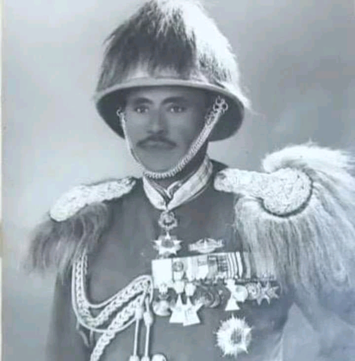
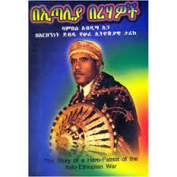

Akkam jirtuu dawaatoota keenya , guyyaa har'aa seenaa gooticha itoophiya tokko sinitti himna . gootichi kunis koloneel abdiisaa Aaga jedhama.
koloneel Abdisaa aaga waxxabajii 2 , bara 1911 (Akka lakkofsaa Itoophiyaati) Godinaa wallagaa lixaa Anaa najjoo iddoo kidanemihiret jedhamutti Abba isaa Bashaa Abbafuudi fi Haadha isaa Addee shaakkanee Cakkaa irra dhalatee.
Bara 1918 Najjootti , Mana Barmusaa Abbaa Garbaa Maariiyaam seenee Afaan Amaariffa dhubbachu ,dubbisu fi barreessu baraate. Bara 1920, Mana Barumsaaa Misiyooni Najjootti Afaan Ingliffaa Akka Barate seenaa isaa irraa ni hubatama.
Sababa Abbaan isaa finfineetti jalaa hidhaameef , abba isaaf iyyannoo gaafachuuf gara finfinee dhufee .
Ha ta'u malee Abbaan isaa Dutti it murta'ee. Abdisaanis Gara najjootti osoo hiin deebi'in Achumaa finfineetii hafee booda Gara Rayyaa waraanaatti makame.
Umuriin isaa yemmuu waggaa 14 guttuu, Bara 1925 (ALH), Mana barnootaa waraanaa Hoolotaa Gannat seene. leenjii waraana xummuree Ajajja kudhaanii taées ebbifame.
Sadarakaa ajaajaa shantamaa irraa gaafa jiru, xaaliyaaniin Qaanii waraanaa Adawaa irrattii ishee qaqabee Haloo ba'uuf qoophii baroota dheeraa booda yemmuu biyya weerartu gootota akka isaa waaliin weerara xaaliyaanii karaa naqamtee qoolachuuf finfineedha garaas qajeelaani.
Xaaliyaaninis buufataa ishee boonaayyatti godhatte waan turteef, buufata kaana irratti haleella qaqabsaniin xiyyaroota 4 gubanii, takka kaatee jalaa milqxee. Injifaannoo buufataa boonayyatti ergaa goonfatanii booda weerartoota xaaliyaanii gimbbii jiraan waraanuuf deemanii loola cimaan erga taéen booda abdiisaan rukkutamee maddaé.
Akka yaalamuuf jimmaatii gaafa geefamus xaaliyaanooni quba qabu turan.kanaafiis Baandoota isaanii manaa yaalaa keessaa turaniitti xaaliyaanooni himanii abdiisaan Yaalaaf gara finfinnee akka dhufu taé.riiferiin bareefameefi abdiisan yaalamuuf garaa finfinee deeme.
Abdiisaan yaalaa isaa fixaatee gaafa ba'uus , eegumsii cimaan akka isaratti gaageefamu taée. jiá gurraandhalaa keessa bara 1928, finfineetti generala xaaliyani giraazini (Graziani )irratti boombiin darbaatamee madaaye. taatiin kunis Yekatit kudha 12 jedhamuun bekkama.
gochiicha kaan qindeesse abdiisadha jeejuun toáanno jala akka oolu taasifame.
Achumaanis Xaaliyaanooni garaa biyya isaanitti geessan mana hidhaatti galchan. manii hidhaan keessa turee Ani'onnoo jedhama. Abdisaan mana hiidhaa keessati wardiyoota wajjin walitti bu'iinsaa waan ummuf , duátti wardiyyotaf sababa taé.
kanaafis gara mana hidhaa biraati jijiraame.tóoánno cimaanis akka irratti godhamu ajajjnii darbee. Ammas amalli diiddaa isaa waan itti ulfaateef xaaliyanooni Abdisa biyya baasuun mana hidhaa biraa kamboo itenate jedhaamutti geessani . Mana hidhaa saanittis uffaata halkanii kennamef tarsaasuun fooée gadii rarrasuun hiriyoota isaa mana hidhaa jiraan waaliin mana hidhaa miliqe.
Baddiyaa bosona xaaliyaani keessa osoo deemu, abba fi ilma ta'aani horii kan tikksaaitti goranii galaa irraa dhufatanii beela ba'ani. jarooni sunis qawwee qabu turan. qawwicha akka keenaniif abdiisan ilmaa fi abba gaafanaan diidaan. achumanis abdiisaan qawwicha harkaa bute michire fudhate. jarris miliquuf gaafa yaadan , abdiisaan rasaasan dhahee lamanu galaafate. sodaan abdiisaas diinatti nu himu jedhe waan shakkeefidha kan ajjeesee.abbdisaan akuma biyya isaati goota turee biyaa xaaliyaanittis mataa gadi hin qabaanne .
Bosona sambachino keessati warra fashiistii xaaliyaanii fincilaan waajiin hirirruun qabsoo biyyaa xaliyaanitti eegalee achittis itti fuufee . hiriyooni isaa maqaa meejoor antooniyoo jedhuun moggaasan. meeshaa waraanaa argachudhaf jeecha manneen hidhaafi kuusaa meeshaa waraanaa weeraruun meeshaa waranaa hedduu boojiániruu.
koloniéel abdiisaa agaa waraana Addunyaa keessatti Itoophiyaanota bakka bu'uun faashitii xaaliyaanii biyya isheeti waraaneera. Faashitii fi naaziin gaafaa mo'ataman abdiisaanifi hiriyooni isaa waajjin lolltoota Inglizii, America fi fransaayiitti makaamuun tajaajilaniru.
Wagga kudhaan booda garaa biyyatti deebi'uun wirtuu leenjii hoolotaati mindeefamee hojjechaa tureera. Koloni'el Mangistuu Hailamariyaam carra abdiisaan leenjiifamuu argaatee ture. zeid bareed gaafaa Itoophiyaa weeraruu , Abdiisaa agaa dirree waraana inni itti hogganaa tureeti, weerartuu somaaliyaa heddu booji'uu danda'ee jira. Abiisaan yaadanno isaa barreffata waan tureef , kitaaba afaan amariifaan በጣሊያ በረሃዎች kan jeedhu waaye mudaannoo xaaliyaan keessaa turee ibsuu barreessera.
dhumarratis ,Abdiisaan onkololeessa 3 Bara 1967 finfinneetii, addunyaa kanarra boqateera.
Dawwatoota keenya qophiin keenya har'aa kanuma fakkata. seenaa har'a siinif dhiyeesine kana irraa waa bayy'ee baratuu jennee abdanna , waan nu dawwataniif galatooma siniin jeenna.
Horaa buulaa. deebana !
| ID | Full Name | Section |
| A/UR14779/10 | Bilisuma Tadesse | Section 7 |
| A/UR14337/10 | Wakoya Kumsa | Section 7 |
| A/UR14801/10 | Yerusalem Bayisa | Section 6 |